医局とは？仕組み・役割から入局・退局まで完全ガイド
制度の仕組み、役職の序列、入るべきか、辞め方まで。医局のすべてを俯瞰する総論。

医師のキャリア完全ガイド｜プラン・専門医・転職・働き方
キャリアプランから10年目の迷い、臨床以外の道まで。キャリア形成を俯瞰する総論。

医師とお金の完全ガイド｜資産形成・バイト単価・法人化まで
労働収入の最適化から投資、法人化まで。医師のお金を3レイヤーで俯瞰する総論。
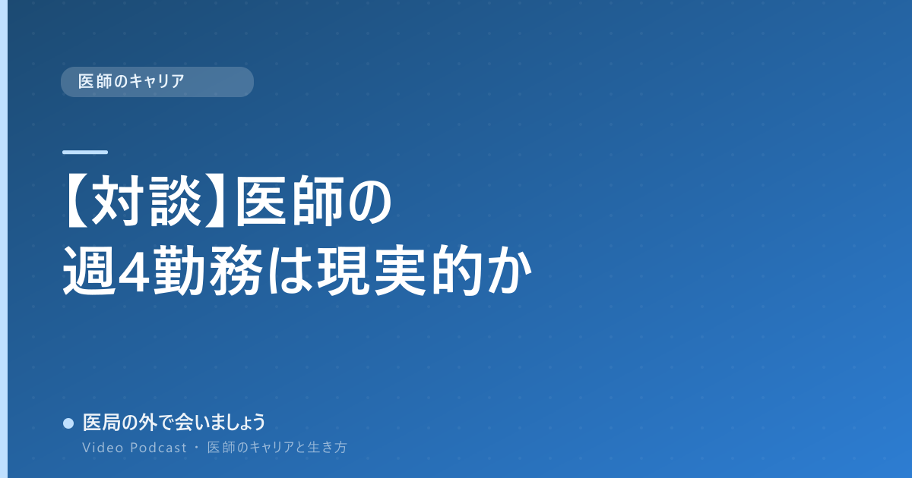
【対談】医師の週4勤務は現実的か｜週6で働いていた2人が語る
勤務を減らすまでの経緯と変化を、掛け合いそのままの対談形式で。

【実録】海外で働く日本人医師のリアル｜ベトナムの病院から
「回るんじゃない、回すんです」。ハノイの私立病院で見えた日本の当たり前。
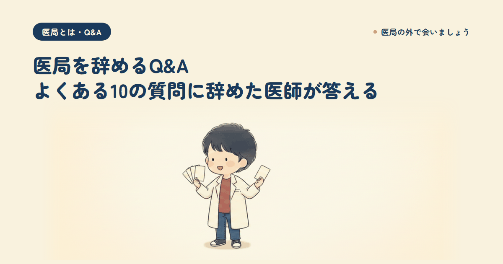
医局を辞めるQ&A｜よくある10の質問に本音で答える
何年目がいい？引き止められたら？一問一答で迷いどころを解消。

【書評】DIE WITH ZEROを医師が読むべき理由
思い出の配当と経験への投資。億り人医師は「ゼロで死ぬ」に同意するか。

医師が読むべきお金の本ベスト5｜投資と資産形成の必読書
億り人医師が選ぶ、投資・資産形成・お金の哲学の必読5冊。

医師が読むべきキャリア・働き方の本ベスト5
医局を出た医師が選ぶ、転職・キャリア設計・働き方の必読5冊。

医師が読むべき生き方・人生観の本ベスト5
「どう生きるか」を問い直す必読5冊を、65カ国を旅した医師が厳選。

医師が読むべき時間術の本ベスト5｜忙しすぎる臨床医のために
週6から週4へ変えた医師が選ぶ、時間の作り方の必読5冊。
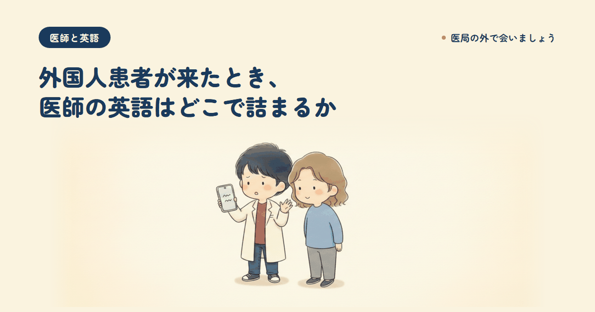
外国人患者が来たとき、医師の英語はどこで詰まるか
詰まるのは会話力ではなく医学用語。翻訳ツールでも埋まらない現場の壁。
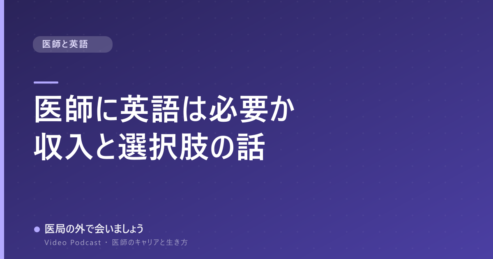
医師に英語は必要か｜英語で収入と選択肢がこう変わる
英語で広がるキャリアと収入の選択肢を、海外で働く医師が本音で。
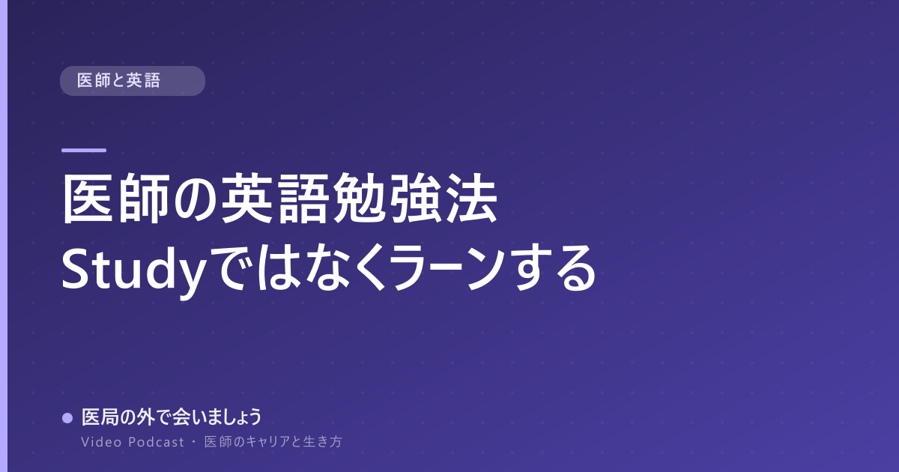
医師の英語勉強法｜Studyではなく"Learn"、完璧主義を捨てる
試験を受けずに世界一周で英語を身につけた医師の学習法。

子供の英語教育の落とし穴｜「勉強させちゃダメ」の理由
インター育ちの医師が語る、いつから・インター・読み書きの本音。

医局の辞め方・辞めるタイミング完全ガイド｜何年目が正解か
辞めるベストな年目、円満退局の手順、専門医なしのリスクを本音で。

医局を辞めてよかった｜辞めた医師の本音と、辞めた後の現実
辞めた後に増えた時間、変わった働き方、新しく見えた景色。
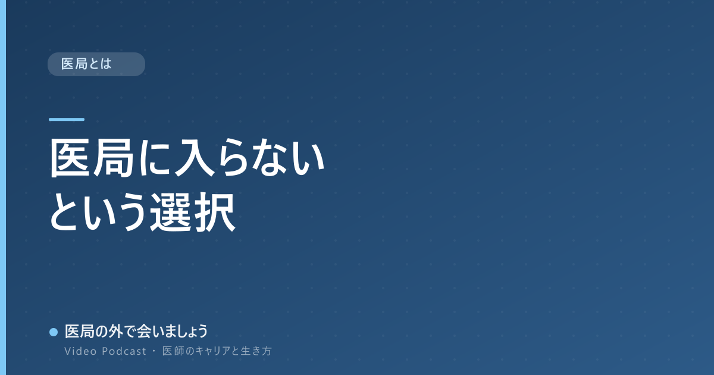
医局に入らないという選択｜割合・デメリット・専門医は取れるのか
医局に属さず働くリアル。割合の実態、リスク、向いている人の特徴。

医局のメリット・デメリット｜入るべきかを本音で解説
専門医や人脈という利点と、人事の不自由さという欠点を正直に比較。

医局の年収のリアル｜大学病院で実際いくら稼げるのか
給料が安いと言われる理由と、外勤で成り立つ収入構造。

医局説明会の完全攻略｜服装・質問・お礼メール例文まで
説明会の準備から当日のマナー、そのまま使えるメール例文まで。

医局の役職とヒエラルキー完全解説｜教授・医局長・医員の序列
誰が何を決めるのか。序列と役割、医局長と医長の違いを整理。
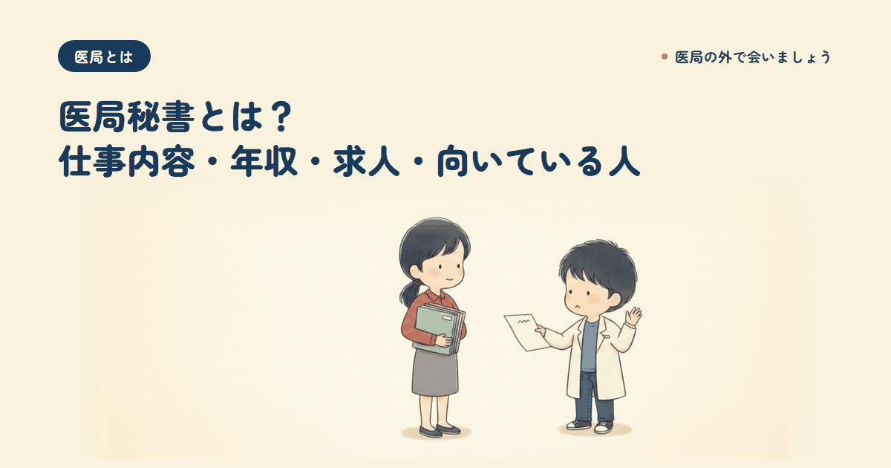
医局秘書とは？仕事内容・年収・求人・向いている人まで解説
医局を裏で支える事務のプロ。仕事内容、年収、求人の探し方。
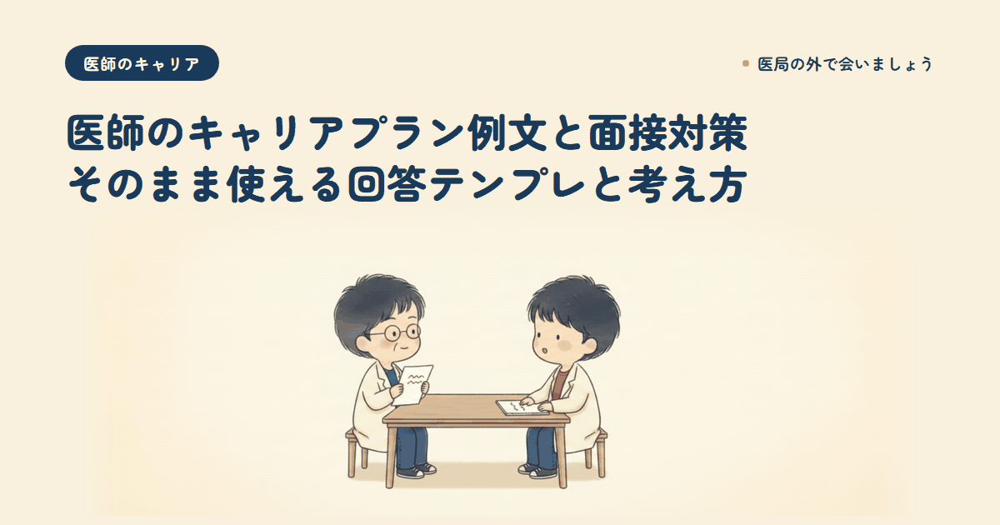
医師のキャリアプラン例文と面接対策｜そのまま使える回答テンプレ
年代別の例文、面接で評価される答え方、NG回答。

専門医とキャリア形成｜取るべきか問題に、医局を出た医師が答える
臨床医・経営者・キャリアチェンジ、進む道で答えは変わる。

女性医師のキャリアプラン｜出産・育児と両立するキャリア形成
専門医取得のタイミング、時短勤務、復職。ライフイベントを見据えて。
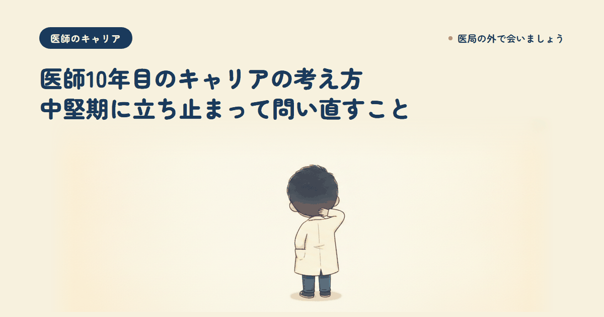
医師10年目のキャリアの考え方｜中堅期に問い直すこと
専門医を取り終えた頃に湧く迷い。流される前に自分の軸を問い直す。

医師のキャリアチェンジ・セカンドキャリア｜臨床以外の道
産業医・経営・投資など臨床以外の選択肢と、複利になる踏み出し方。
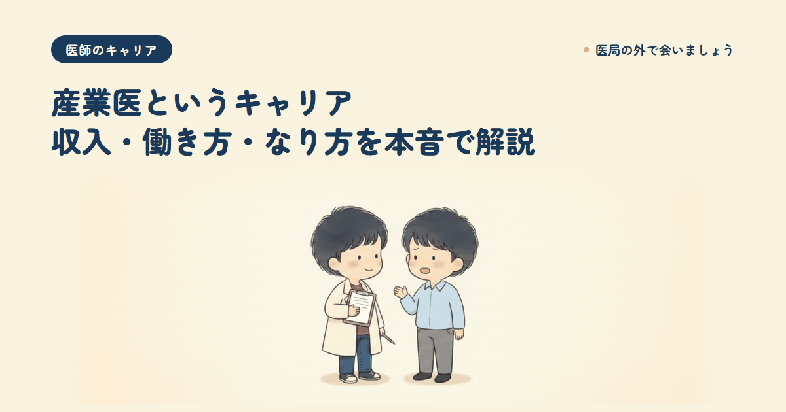
産業医というキャリア｜収入・働き方・なり方を解説
当直なしで時間が読める働き方。専属と嘱託の違い、資格の取り方。
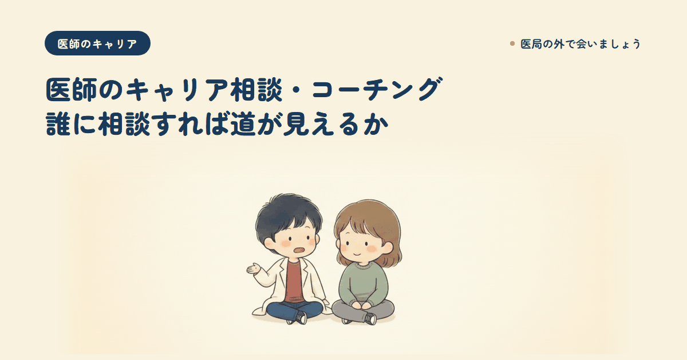
医師のキャリア相談・コーチング活用法｜誰に相談すれば道が見えるか
転職エージェント・上司・コーチングの違いと使い分け。

医師の資産形成の始め方｜忙しい臨床医のための最初の一歩
目的の決め方、最初の一歩、陥りやすい落とし穴。億り人医師の実体験から。

非常勤医のバイト・時給のリアル｜単価の考え方と選び方
時給が決まる構造と、時間の切り売りにしない「複利になるバイト」。
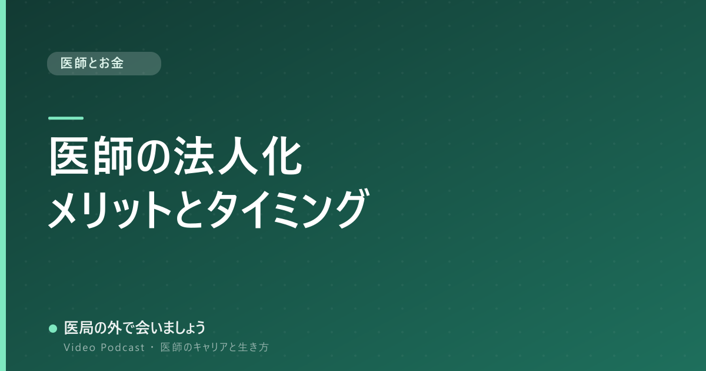
医師の法人化｜メリット・デメリットと検討のタイミング
節税だけで判断しない考え方。検討の順番とよくある勘違い。